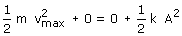

|
Un móvil que oscila armónicamente tiene energía
cinética y energía elástica siendo constante la suma
de ambas. Al pasar por el origen la energía elástica es
cero y la cinética vale 1/2 m(vmax)2  Evidentemente, a igualdad de masa y amplitud, tendrá la mayor velocidad máxima el cuerpo que esté unido al muelle de mayor k |